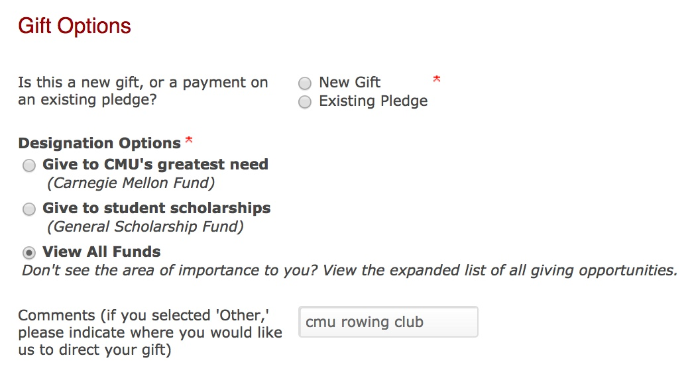

Welcome to the Tartan Crew Alumni Network (TCAN)! As you’ve heard we are in the process of creating a vibrant alumni network for the Carnegie Mellon University Rowing Club (CMURC). The network is inclusive to: parents, coaches, advisors, staff, and alumni with any level of team association. If you have an affinity for the Carnegie Mellon University Rowing Club, we want you connected!
Submit a registration form MAKE A GIFT
Any amount is fine; we hope you can help us get started by donating HERE. Gift designation is pre-selected on the donations page. All gifts are tax-deductible contributions to Carnegie Mellon University and are designated directly to the Tartan Crew Alumni Network. Funds will be used for events, web hosting, alumni boat entries, official alumni t-shirts, communications, etc. Please note that this is not a donation to the current team; as our Network develops, we will work to provide better opportunities for team donations though!
How to make a donation:
Under the "Make a Gift" page, select "View All Funds" and "Other (please specify your designation in the comments box)", then fill in the comments with "Carnegie Mellon Rowing Club".
